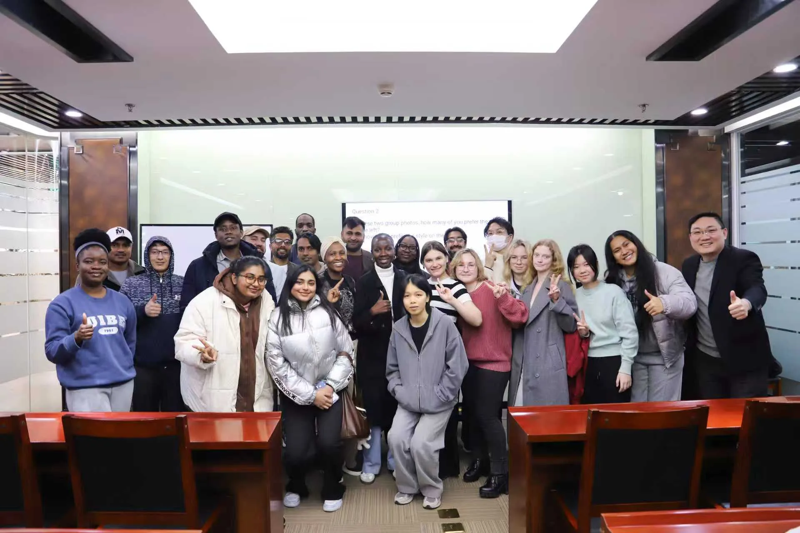
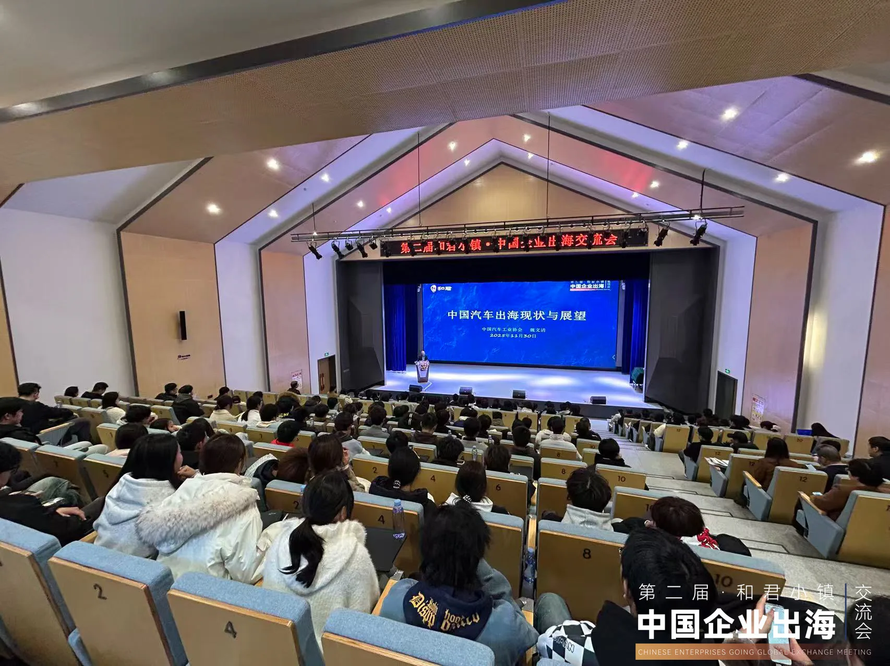
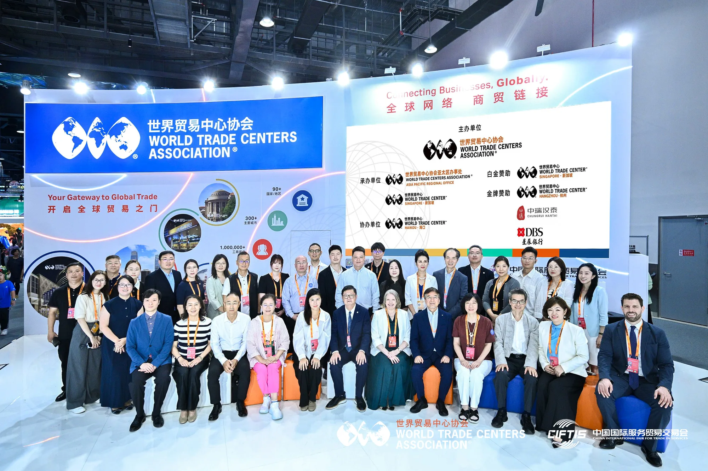
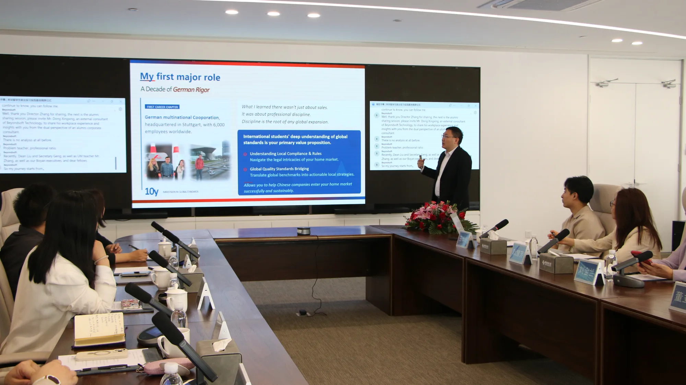
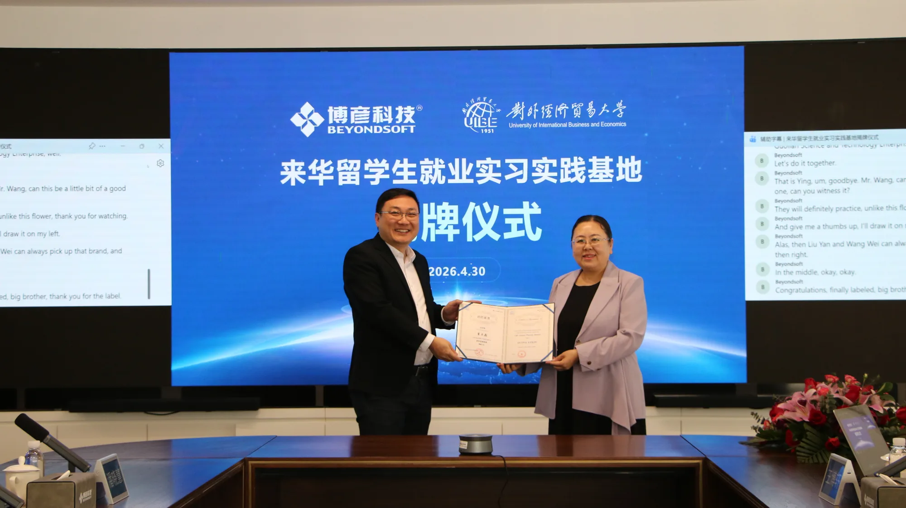

Global Expansion Clarity: Where and Whether.
很多企业不是没有海外机会，而是不确定第一个市场该选哪里、第一步该怎么走。国家选错、模式选错、合作伙伴选错，都会变成长期投入和试错成本。海鑫汇帮企业在行动前把选项、风险、成本摊开，给出一个经得住推敲的判断——而不是一场游学或一次论坛。
INDUSTRY REPORTS
海鑫汇 GTN 把两年一线情报与顾问网络，整理成可按赛道查阅的出海研究报告。首份《新能源电力电气出海研究报告》已上线，其余赛道研究进行中。
Before you invest in the wrong market.
当你已经面对具体的海外选择——去哪个国家、用代理还是自建、重资产还是轻资产——仅靠公开信息无法判断时，才需要进入下一步。3分钟自测（1元）先测出你当前的出海准备度评分与关键短板；如果需要更深入的判断，预约首诊，和董立鑫一对一拆解你的业务现状，找到最值得先解决的一个问题，结合一线情报、活动网络与顾问资源，对具体决策做出判断，产出一份简要的书面判断报告。
Not a forum. A track record.
不是一场论坛、一次游学就能证明的事——这些数字和案例，是我们真实走过的市场留下的记录：

把两年里的真实动作摊开看——我们已经走过 70+ 场活动，覆盖企业游学、论坛、访谈、国际交流、海外考察、沙龙与读书会。下面按类型给你入口：
佩蒂股份、群核科技、智谱 Z.AI 全球化考察。
两届海鑫汇出海年会、WTC Singapore 服贸会。
报告可信度 · 新能源出海报告已发布28 个海外市场实战结论、安哥拉新能源投资非洲。
报告可信度 · 新能源出海报告已发布马尔代夫、墨西哥、哈萨克斯坦等驻华机构对话。
2012–2026，德国、法国、东南亚、中东欧等 20+ 国家。
巴基斯坦落地、宁波制造出海、跨境电商联动。
《大出海》《出海战略》等出海主题共读。
服贸会首发、媒体采访与出海相关报道。
从 2012 年斯图加特 Roto 的一个仓库，到 2026 年匈牙利产业考察——这是当前设计里没有、但内容最强的差异化资产。代表性现场：
一个仓库，提前十年看见中国物流的未来。
从国会大厦到"新能源匈牙利"的产业现场。
中国企业全球化实践调研报告。
中国企业进入中东欧市场的真实落地路径。
INDUSTRY DECISION SCENARIOS
 链主 · LEAD王高歌
链主 · LEAD王高歌
海鑫汇 GTN 为智能制造企业提供市场分析、资源对接和全球运营支持，助力制造能力走向国际市场。
查看该行业出海报告 →该行业出海报告：制作中 链主 · LEAD张乐
链主 · LEAD张乐
海鑫汇 GTN 依托 AI 产业专家与全球运营网络，帮助企业判断算力、空间智能与配套供应链的出海路径与合规边界。
查看该行业出海报告 →该行业出海报告：制作中 链主 · LEAD张国胜
链主 · LEAD张国胜
 链主 · LEAD赵伟栋
链主 · LEAD赵伟栋
海鑫汇 GTN 依托全球合作伙伴和专家网络，为企业提供跨境投资与资源整合服务。
查看该行业出海报告 →该行业出海报告：制作中 链主 · LEAD张光辉
链主 · LEAD张光辉
 链主 · LEAD张成刚
链主 · LEAD张成刚
海鑫汇 GTN 联合教育机构、行业专家和国际资源，帮助企业建立面向全球发展的组织能力。
查看该行业出海报告 →该行业出海报告：制作中实地考察中国宠物食品龙头佩蒂股份（300673.SZ）的全球化布局。
杭州"科技六小龙"之一，AI 产业全球化实践考察。
清华系大模型企业 GLM 系列技术与出海视角。
AI + 数智技术赋能中国企业出海破局。
和君小镇，汇聚出海企业家的年度实战分享。
和君小镇，出海战略与全球化路径首场年度对话。
董立鑫协办，亮相中国国际服务贸易交易会。
董立鑫协办，焕新启航的全球出海交流平台。
Local judgment, from people who've done it.
目前已建立30+位产业专家顾问网络，覆盖制造、科技、消费品等多个行业。部分顾问来自上市公司及知名企业，部分为跨国投资人、产业高手。
A network built across multiple institutions and partners.
企业进入陌生市场时，最缺的不是动力，而是当地可信的合作伙伴、渠道和信息来源——这些资源用来降低进入成本和试错风险。海鑫汇连接当地企业、行业机构与市场资源，帮助企业进入陌生市场时建立可靠合作关系。
运营中心主任兼CMO
北京 · 中国
杭州 · 中国
苏州 · 中国
宁波 · 中国
深圳 · 中国
日本
新加坡
哈萨克斯坦
中东
巴基斯坦
一个仓库，提前十年看见中国物流的未来。
一座总部比首都更多的城市，欧洲机构枢纽。
连"修文物"都做成产业标准的城市。
从国会大厦到"新能源匈牙利"的产业现场。
中国企业全球化实践调研报告。
中国互联网企业全球化实践研究。
中国 IT 服务企业全球化实践启发。
群核科技东南亚市场实践研究。
董立鑫对话马尔代夫驻华大使，探讨中马经贸与人才交流。
与 JMJ 达成战略合作，共促中国与非洲商业投资交流。
推动中国企业进入拉美（墨西哥）市场合作。
中亚市场考察与中国企业出海合作。




